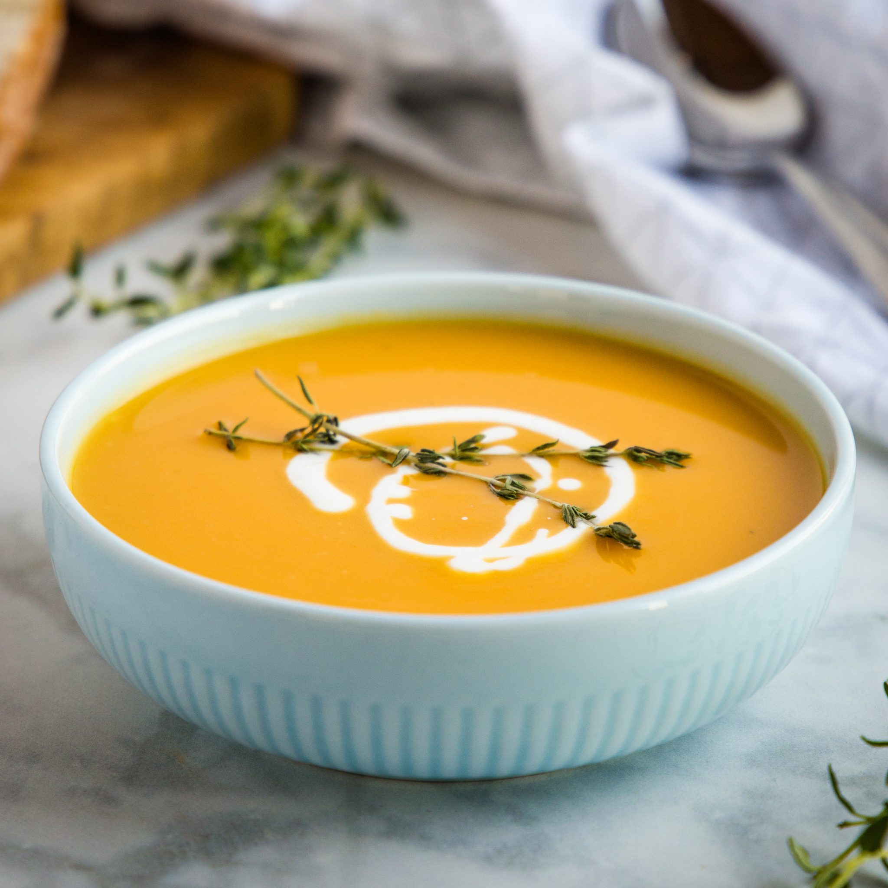

Pumpkin Butternut Squash Soup

TThis delicious soup is quick and easy to make by roasting fall-harvested butternut
squash. This recipe provides a great way to get that pumpkin spice goodness into your
fall soup lineup.
Ingredients
- 3 pounds peeled and cubed butternut squash
- 2 large onions, quartered
- 1 tablespoon olive oil
- 4 cups vegetable broth
- 1/2 cup heavy cream
- 1 (6 ounce) Greek yogurt
- 1/2 teaspoon salt
Directions
- Preheat the oven to 425 degrees F (220 degrees C).
- Mix together cinnamon, ginger, nutmeg, allspice, and cloves in a small bowl.
Set pumpkin spice mix aside.
- Place butternut squash and onions in a large bowl. Drizzle with olive oil and
toss to coat. Transfer to a baking sheet.
- Roast in the preheated oven until soft, 25 to 30 minutes. Remove from the oven
and transfer to the bowl of a food processor. Add vegetable broth, cream, and
salt; blend until smooth. Add 4 tablespoons of the reserved pumpkin spice mix,
and blend until combined. Ladle into 6 microwave-safe soup bowls.
- Cook each serving in the microwave on high for 1 minute. Stir soup and continue
to cook and stir, every 30 seconds, until hot. Top each serving with 1 1/2
tablespoons Greek yogurt and 1/2 teaspoon of pumpkin spice mix.